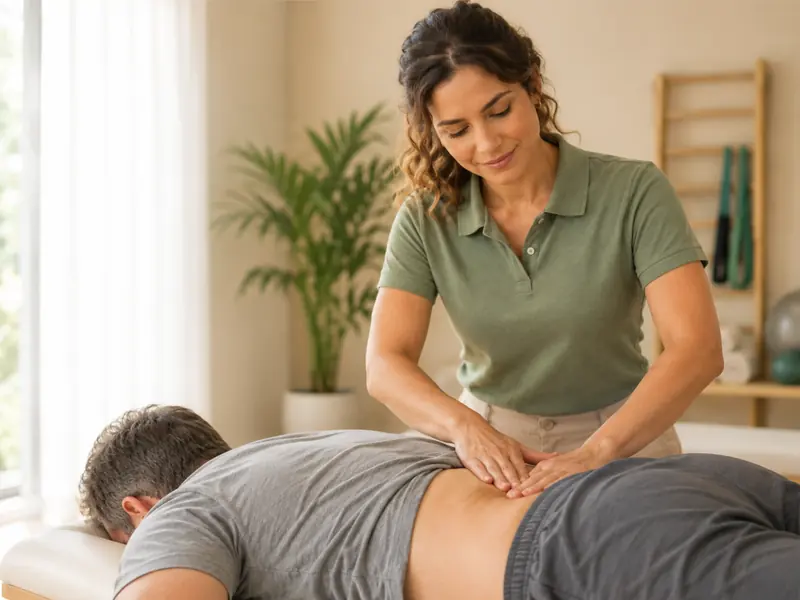

Fisioterapia ortopédica
Para dor lombar, dor cervical, hérnia de disco, tendinites e bursites. Com terapia manual, exercícios terapêuticos e orientação de postura, o objetivo é reduzir a dor e devolver a confiança para os movimentos do dia a dia.
Tratar minha dor